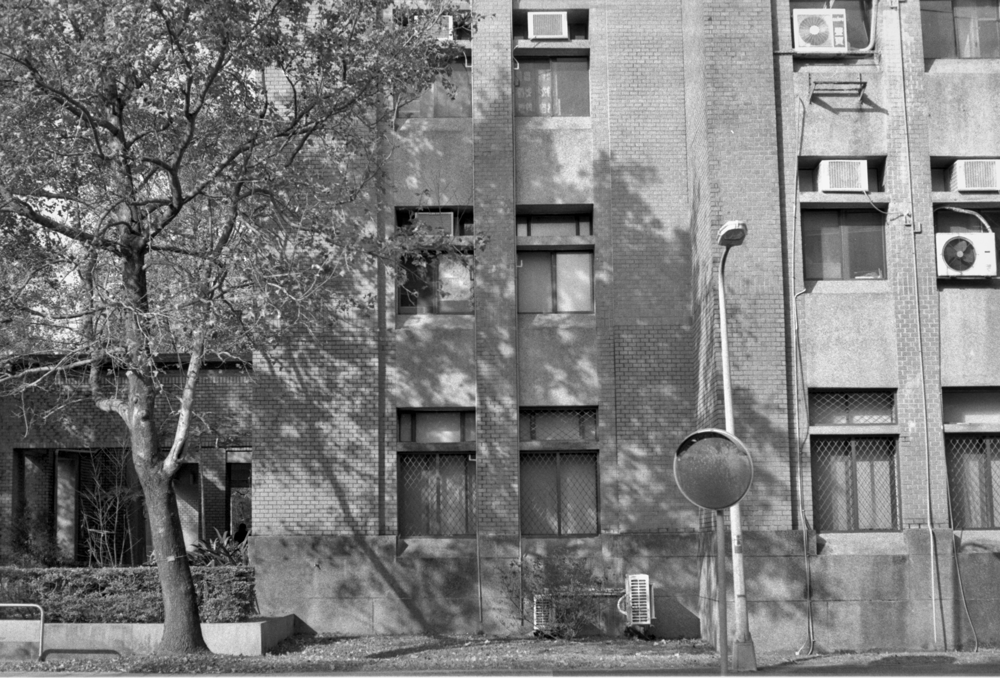

Ting Wei Xu's personal page
我與底片攝影

與底片相遇，是在我18歲時。
我看著影視劇集中的男主角，對一台底片相機癡迷，並透過底片相機將女主角紀錄下來。 其中，此劇集有男主角沖洗底片、將底片放出在相紙上等等的過程畫面，也奠定了我對底片世界的好奇與嚮往。
也因為如此，我加入了校內的攝影社，因為台大攝影社擁有"暗房"，也就是個能夠做所有底片的後續處理的設備間。
我對底片攝影的看法
起初，我對底片產生興趣，就是源自於劇集中呈現出來的，那影像逐漸浮出相紙表面神奇的感受。
但實際操作底片相機和沖洗底片後，我體會到的，是拉動相機零件的嘰嘰聲，是按下快門瞬間的快門聲，我感受到了機械零件間的轉動； 我每按下一次快門，都期待、想像著它最後沖洗出會呈現的樣子，沖洗時，隨著手上沖片罐的搖動，也滿懷著期待與小心翼翼的心情，等待影像的顯影。
也因為底片是個不可逆的實體，不允許拍照完不滿意想刪掉的情形，因此每個按下的快門都經過深思熟慮，並確認過每個參數都正確後才會拍攝， 也無形中培養了我精確判斷的能力。
底片使我更貼近了攝影本身，並體會到拍照最根本的純粹和快樂。
攝影帶給我許多美麗的邂逅，願我能持續不懈的精進自己，最終能隨心所欲地將自己想像中的畫面與構圖呈現在相紙上，並帶給他人共鳴與感動。

我的小檔案
我是許庭瑋，19歲，台中人。
目前就讀於國立台灣大學森林環境暨資源學系，並擔任108-2學期的台大攝影社展覽部幹部。